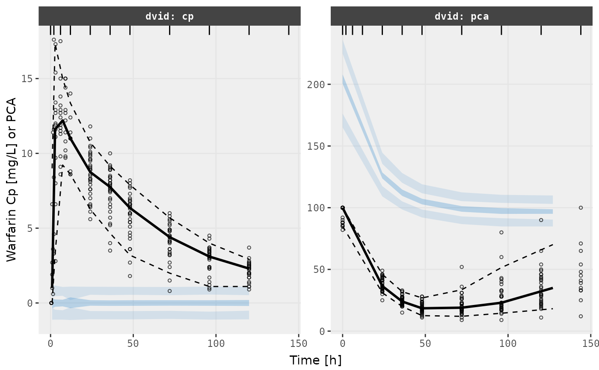
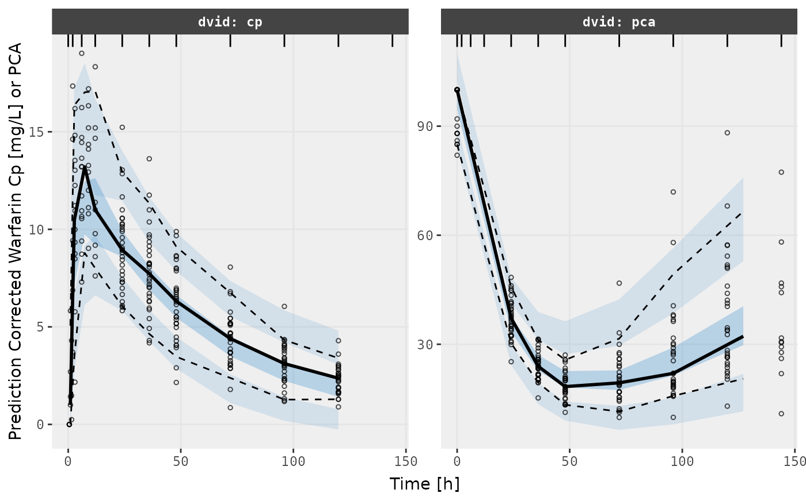

Step 0: What do you need to do to have nlmixr2 run
Monolix from a nlmixr2 model
To use Monolix with nlmixr2, you do not need to change
your data or your nlmixr2 dataset. babelmixr2
will do the heavy lifting here.
You do need to setup how to run Monolix. If you have
setup the lixoftConnectors package from Monolix, no further
setup is needed. Instead if you run Monolix from the
command line for grid processing (for example) you can figure out the
command to run Monolix (it is often useful to use the full
command path and set it in the options, ie
options("babelmixr2.monolix"="monolix") or use
monolixControl(runCommand="monolix"). If needed, I prefer
the options() method since you only need to set it once.
This could also be a function if you prefer (but I will not cover using
the function here).
Step 1: Run a nlmixr2 in Monolix
Lets take the classic warfarin example. The model we use in the
nlmixr2 vignettes is:
pk.turnover.emax3 <- function() {
ini({
tktr <- log(1)
tka <- log(1)
tcl <- log(0.1)
tv <- log(10)
##
eta.ktr ~ 1
eta.ka ~ 1
eta.cl ~ 2
eta.v ~ 1
prop.err <- 0.1
pkadd.err <- 0.1
##
temax <- logit(0.8)
tec50 <- log(0.5)
tkout <- log(0.05)
te0 <- log(100)
##
eta.emax ~ .5
eta.ec50 ~ .5
eta.kout ~ .5
eta.e0 ~ .5
##
pdadd.err <- 10
})
model({
ktr <- exp(tktr + eta.ktr)
ka <- exp(tka + eta.ka)
cl <- exp(tcl + eta.cl)
v <- exp(tv + eta.v)
emax = expit(temax+eta.emax)
ec50 = exp(tec50 + eta.ec50)
kout = exp(tkout + eta.kout)
e0 = exp(te0 + eta.e0)
##
DCP = center/v
PD=1-emax*DCP/(ec50+DCP)
##
effect(0) = e0
kin = e0*kout
##
d/dt(depot) = -ktr * depot
d/dt(gut) = ktr * depot -ka * gut
d/dt(center) = ka * gut - cl / v * center
d/dt(effect) = kin*PD -kout*effect
##
cp = center / v
cp ~ prop(prop.err) + add(pkadd.err)
effect ~ add(pdadd.err) | pca
})
}Once monolix is run, you can run the nlmixr2 model using
Monolix as if it is new estimation method:
fit <- nlmixr(pk.turnover.emax3, nlmixr2data::warfarin, "monolix",
monolixControl(modelName="pk.turnover.emax3"))
#> ℹ parameter labels from comments are typically ignored in non-interactive mode
#> ℹ Need to run with the source intact to parse comments
#> ℹ assuming monolix is running because 'pk.turnover.emax3-monolix.txt' is present
#> → loading into symengine environment...
#> → pruning branches (`if`/`else`) of full model...
#> ✔ done
#> → finding duplicate expressions in EBE model...
#> [====|====|====|====|====|====|====|====|====|====] 0:00:00
#> → optimizing duplicate expressions in EBE model...
#> [====|====|====|====|====|====|====|====|====|====] 0:00:00
#> → compiling EBE model...
#> using C compiler: ‘gcc (Ubuntu 11.4.0-1ubuntu1~22.04) 11.4.0’
#> ✔ done
#> → Calculating residuals/tables
#> ✔ done
#> → compress origData in nlmixr2 object, save 27560
#> ℹ monolix parameter history needs exported charts, please export chartsThis fit issues an informational tidbit -
- monolix parameter history needs exported charts, please export charts
This will automatically be generated as well when
lixoftConnectors package is generated and you have a recent
version of Monolix. If you don’t have that information then the
important parameter history plots will not be imported and you cannot
see those plots.
Just like with the NONMEM translation, the
monolixControl() has modelName which helps
control the output directory of Monolix (if not specified
babelmixr2 tries to guess based on the model name based on
the input).
Printing this out this nlmixr2 fit you see:
fit
#> ── nlmixr² monolix ver 2021R1 ──
#>
#> OBJF AIC BIC Log-likelihood Condition#(Cov)
#> monolix 1522.704 2448.398 2527.819 -1205.199 2203.836
#> Condition#(Cor)
#> monolix 2.697324
#>
#> ── Time (sec fit$time): ──
#>
#> setup table compress other
#> elapsed 0.002699 0.122 0.008 4.344301
#>
#> ── Population Parameters (fit$parFixed or fit$parFixedDf): ──
#>
#> Est. SE %RSE Back-transformed(95%CI) BSV(CV% or SD)
#> tktr 0.218 0.179 82 1.24 (0.876, 1.77) 84.0
#> tka 0.00533 0.117 2.19e+03 1.01 (0.8, 1.26) 48.6
#> tcl -2.01 0.0518 2.58 0.135 (0.122, 0.149) 28.5
#> tv 2.04 0.0438 2.14 7.73 (7.09, 8.42) 22.6
#> prop.err 0.0986 0.0986
#> pkadd.err 0.533 0.533
#> temax 4.46 0.527 11.8 0.989 (0.969, 0.996) 0.380
#> tec50 0.0786 0.0889 113 1.08 (0.909, 1.29) 47.8
#> tkout -2.94 0.0261 0.888 0.053 (0.0503, 0.0558) 7.87
#> te0 4.57 0.0114 0.249 96.7 (94.5, 98.9) 5.08
#> pdadd.err 3.79 3.79
#> Shrink(SD)%
#> tktr 47.9%
#> tka 48.9%
#> tcl 1.25%
#> tv 6.09%
#> prop.err
#> pkadd.err
#> temax 91.9%
#> tec50 6.29%
#> tkout 36.6%
#> te0 19.9%
#> pdadd.err
#>
#> Covariance Type (fit$covMethod): MonolixLin
#> No correlations in between subject variability (BSV) matrix
#> Full BSV covariance (fit$omega) or correlation (fit$omegaR; diagonals=SDs)
#> Distribution stats (mean/skewness/kurtosis/p-value) available in fit$shrink
#> Censoring (fit$censInformation): No censoring
#> Minimization message (fit$message):
#> IPRED relative difference compared to Monolix IPRED: 0.09%; 95% percentile: (0.01%,0.49%); rtol=0.000941
#> PRED relative difference compared to Monolix PRED: 0.04%; 95% percentile: (0%,0.2%); rtol=0.000428
#> IPRED absolute difference compared to Monolix IPRED: atol=0.00911; 95% percentile: (0.000493, 0.0928)
#> PRED absolute difference compared to Monolix PRED: atol=0.000428; 95% percentile: (3.14e-07, 0.203)
#> monolix model: 'pk.turnover.emax3-monolix.mlxtran'
#>
#> ── Fit Data (object fit is a modified tibble): ──
#> # A tibble: 483 × 35
#> ID TIME CMT DV PRED RES IPRED IRES IWRES eta.ktr eta.ka eta.cl
#> <fct> <dbl> <fct> <dbl> <dbl> <dbl> <dbl> <dbl> <dbl> <dbl> <dbl> <dbl>
#> 1 1 0.5 cp 0 1.40 -1.40 0.500 -0.500 -0.934 -0.638 -0.447 0.689
#> 2 1 1 cp 1.9 3.94 -2.04 1.62 0.284 0.511 -0.638 -0.447 0.689
#> 3 1 2 cp 3.3 8.30 -5.00 4.29 -0.987 -1.45 -0.638 -0.447 0.689
#> # ℹ 480 more rows
#> # ℹ 23 more variables: eta.v <dbl>, eta.emax <dbl>, eta.ec50 <dbl>,
#> # eta.kout <dbl>, eta.e0 <dbl>, cp <dbl>, depot <dbl>, gut <dbl>,
#> # center <dbl>, effect <dbl>, ktr <dbl>, ka <dbl>, cl <dbl>, v <dbl>,
#> # emax <dbl>, ec50 <dbl>, kout <dbl>, e0 <dbl>, DCP <dbl>, PD <dbl>,
#> # kin <dbl>, tad <dbl>, dosenum <dbl>Of particular interest is the comparison between Monolix predictions
and nlmixr predictions. In this case, I believe that these also imply
the models are predicting the same thing. Note that the model
predictions are not as close as they were with NONMEM
because Monolix does not use the lsoda ODE solver. Hence
this small deviation is expected, but still gives a validated Monolix
model.
Optional Step 2: Add conditional weighted residuals/focei objf to Monolix
As in the case of NONMEM, this gives some things that
are not available to Monolix, like adding conditional weighted
residuals:
fit <- addCwres(fit)
#> → loading into symengine environment...
#> → pruning branches (`if`/`else`) of full model...
#> ✔ done
#> → calculate jacobian
#> [====|====|====|====|====|====|====|====|====|====] 0:00:00
#> → calculate sensitivities
#> [====|====|====|====|====|====|====|====|====|====] 0:00:00
#> → calculate ∂(f)/∂(η)
#> [====|====|====|====|====|====|====|====|====|====] 0:00:00
#> → calculate ∂(R²)/∂(η)
#> [====|====|====|====|====|====|====|====|====|====] 0:00:00
#> → finding duplicate expressions in inner model...
#> [====|====|====|====|====|====|====|====|====|====] 0:00:00
#> → optimizing duplicate expressions in inner model...
#> [====|====|====|====|====|====|====|====|====|====] 0:00:00
#> → finding duplicate expressions in EBE model...
#> [====|====|====|====|====|====|====|====|====|====] 0:00:00
#> → optimizing duplicate expressions in EBE model...
#> [====|====|====|====|====|====|====|====|====|====] 0:00:00
#> → compiling inner model...
#> using C compiler: ‘gcc (Ubuntu 11.4.0-1ubuntu1~22.04) 11.4.0’
#> ✔ done
#> → finding duplicate expressions in FD model...
#> [====|====|====|====|====|====|====|====|====|====] 0:00:00
#> → optimizing duplicate expressions in FD model...
#> [====|====|====|====|====|====|====|====|====|====] 0:00:00
#> → compiling EBE model...
#> using C compiler: ‘gcc (Ubuntu 11.4.0-1ubuntu1~22.04) 11.4.0’
#> ✔ done
#> → compiling events FD model...
#> using C compiler: ‘gcc (Ubuntu 11.4.0-1ubuntu1~22.04) 11.4.0’
#> ✔ done
#> → Calculating residuals/tables
#> ✔ doneWhich will add nlmixr’s CWRES as well as adding the nlmixr2
FOCEi objective function
Because you now have an objective function compared based on the same assumptions, you could compare the performance of Monolix and NONMEM based on objective function.
To be fair, objective function values must always be used with caution. How the model performs and predicts the data is far more valuable.
Optional Step 3: Use nlmixr2 for vpc, reporting, etc.
Also since it is a nlmixr2 object it would be easy to
perform a VPC too:
v1s <- vpcPlot(fit, show=list(obs_dv=TRUE), scales="free_y") +
ylab("Warfarin Cp [mg/L] or PCA") +
xlab("Time [h]")
#> using C compiler: ‘gcc (Ubuntu 11.4.0-1ubuntu1~22.04) 11.4.0’
v2s <- vpcPlot(fit, show=list(obs_dv=TRUE), pred_corr = TRUE, scales="free_y") +
ylab("Prediction Corrected Warfarin Cp [mg/L] or PCA") +
xlab("Time [h]")
v1s
v2s
Notes about Monolix data translation
The input dataset expected to be compatible with rxode2
or nlmixr2. This dataset is then converted to Monolix
format:
The combination of
CMTand Dose type creates a uniqueADMvariable.The
ADMdefinition is saved in the monolix model filebabelmixr2creates a macro describing the compartment, iecompartment(cmt=#, amount=stateName)-
babelmixr2also creates a macro for each type of dosing:Bolus/infusion uses
depot()and adds modeled lag time (Tlag) or bioavailability (p) if specifiedModeled rate uses
depot()withTk0=amtDose/rate.babelmixr2also adds modeled lag time (Tlag) or bioavailability (p) if specifiedModeled duration uses
depot()withTk0=dur, also add adds modeled lag time (Tlag) or bioavailability (p) if specified Turning off a compartment uses empty macro